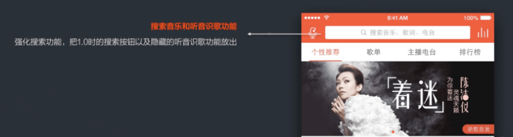
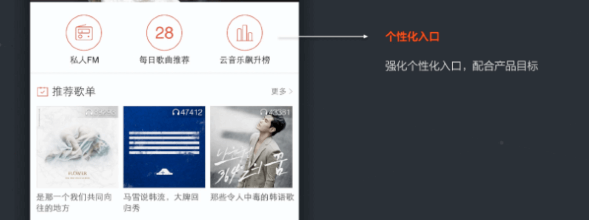
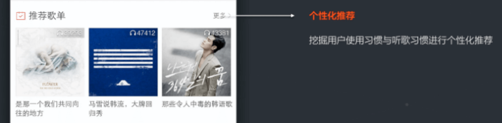
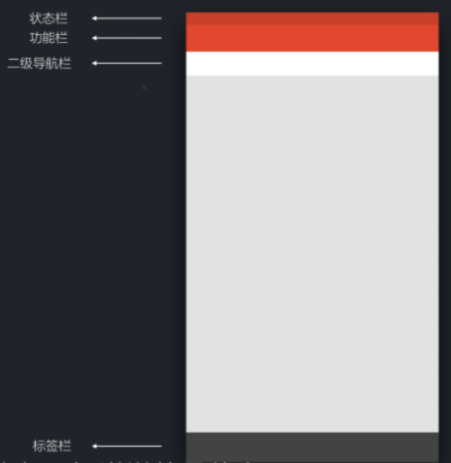
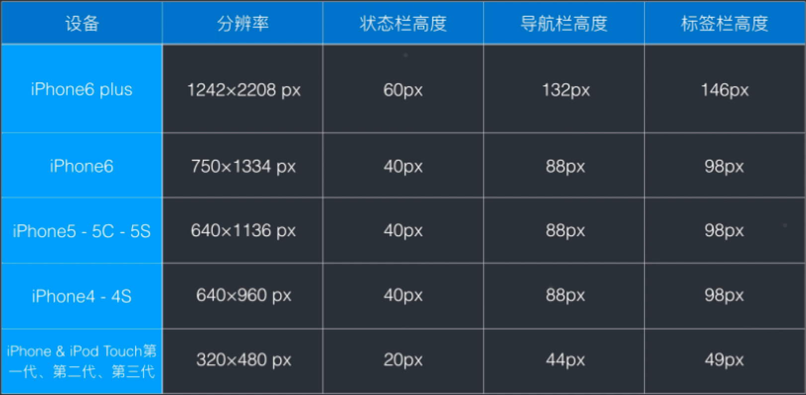
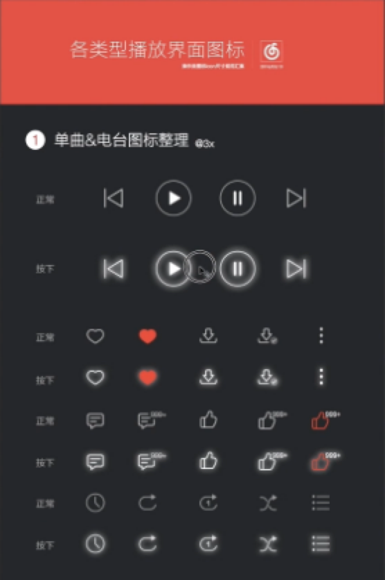
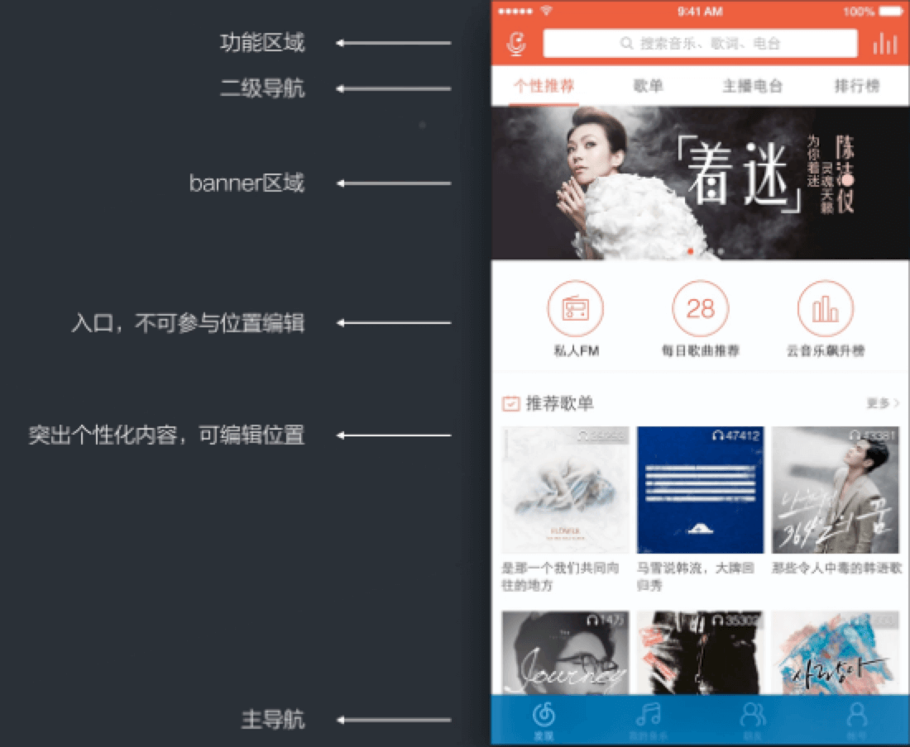

Table of Contents generated with DocToc
无线端APP设计演示
我们将以网易云音乐为例子来讲解无线端APP的设计。
视觉设计师如何看待交互稿？
在视觉设计师看来，交互稿一般有以下三个作业：
- 设计目的
- 页面结构
- 层级表现
设计目的
交互设计稿能够体现设计目的，这里的设计目的又可以分为产品目的和功能目的。
- 产品目的：区别于竞品，突出差异化；强调个性化推荐；推荐歌单，独家放送，推荐MV；产品目的是站在产品经理的角度进行的思考。
- 功能目的：加入个性化推荐目的；简化推荐层级结构；功能目的是站在交互设计师的角度进行的思考
页面结构
交互设计稿可以先页面的结构，以云音乐来说其页面结构可以划分为：搜索音乐和听音识歌、快速播放等。
- 搜索音乐和听音识歌功能
强化搜索功能，把1.0时的搜索按钮以及隐藏的听音识歌个能放出

- 快速播放
全局设计，无论当前处于哪个界面，都可以快速播放音乐
- banner
展示推广位和商业化设计，不具备功能性
- 个性化入口
强化个性化入口，配合产品目标

- 推荐歌单
挖掘用户使用习惯于听歌习惯进行个性化推荐

- 个性化推荐
根据用户使用习惯来调整栏目顺序
层级展现
如何表现层级：颜色、明暗、大小、距离、叠压
播放详情页面的层级展现：黑胶唱片 -> 播放进度 -> 评论喜欢 -> 遮罩 -> 视觉渲染
如何根据交互稿进行设计
在根据交互稿进行设计的时候，首先要根据不同设计制定控件规范，之后根据交互稿进行信息分析，最终确定区域排版。在设计的时候，需要考虑以下三个点：
- 控件规范
- 信息分析
控件规范
- 设备规范
- 图标规范
根据不同的手机分辨率，需要做出多套图片，以适应不同设备。以iOS设备来说，现在需要制作3套图，我们一般称为：1X图、2X图、3X图。
 
其中1X图适用于iPhone4以下的机型，状态栏高度为20px；2X图适用于iPhone4到iPhone6的机型，状态栏高度为40px；3X图适用于iPhone6 Plus，状态栏高度为60px。
除了设备规范外，还需要制定图标规范

结构分析

操作演示
发现音乐页面

音乐详情页面
黑胶唱片页面
背景高斯模糊、加两层遮罩、1022px*1022px的黑胶唱片底座、内部阴影体现厚度；底座内部一层加角度渐变、再加内部阴影提现厚度、外发光做投影；唱片纹理，一圈圈用布尔运算减；唱片封面用蒙版蒙上一层白色；用路径工具做唱片指针；
TIPS：
- 先把大框架做好再去做细节
- 要形成产品的界面图标规范库